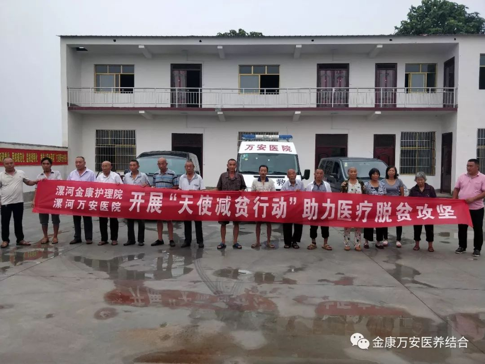
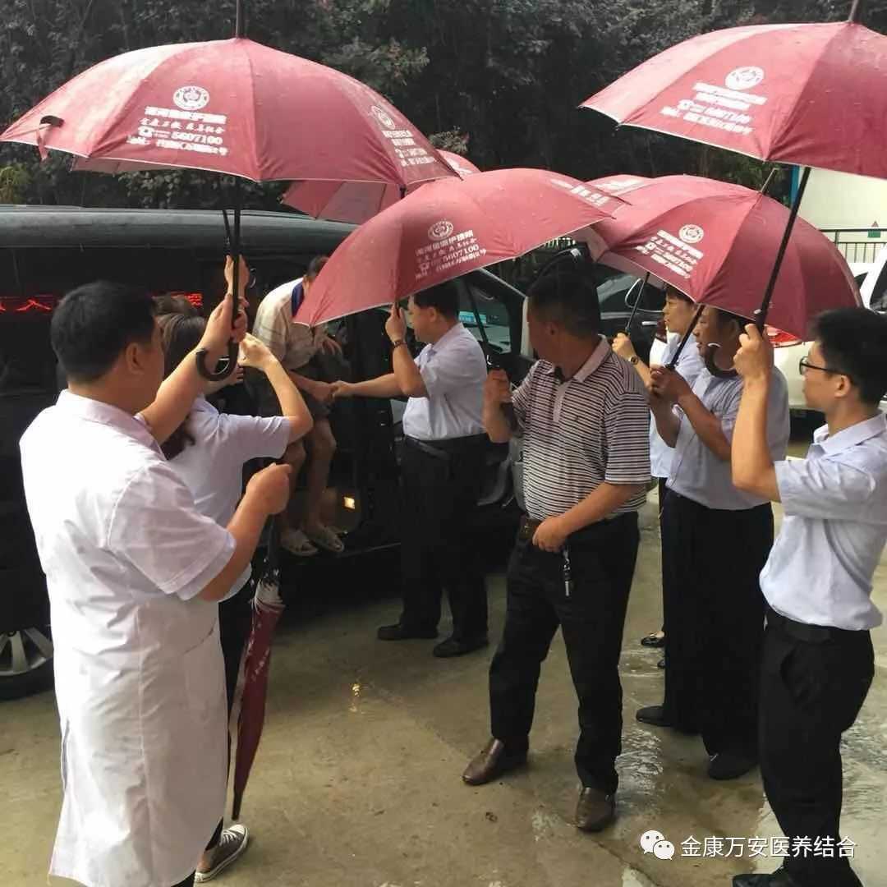
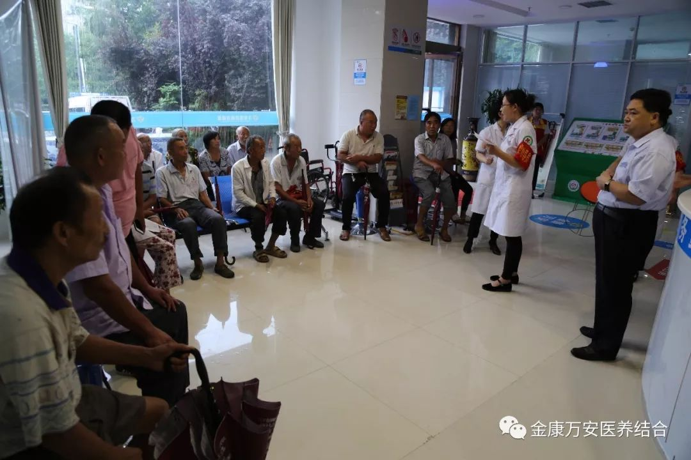
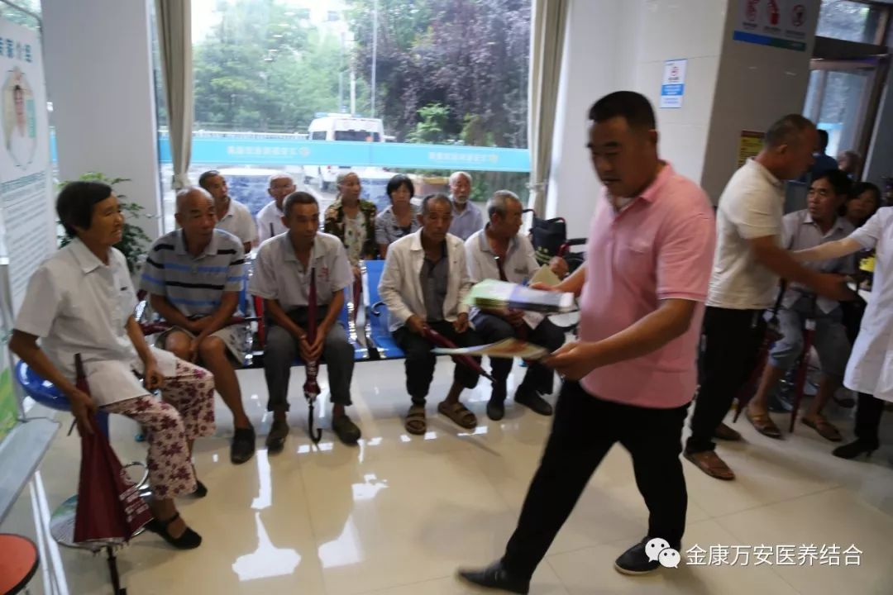
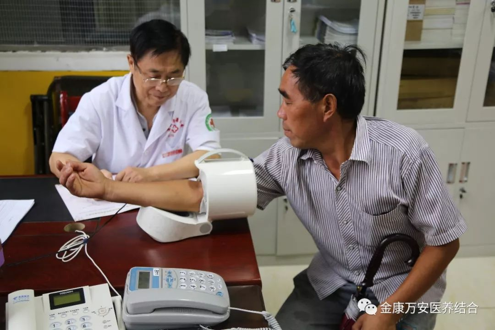
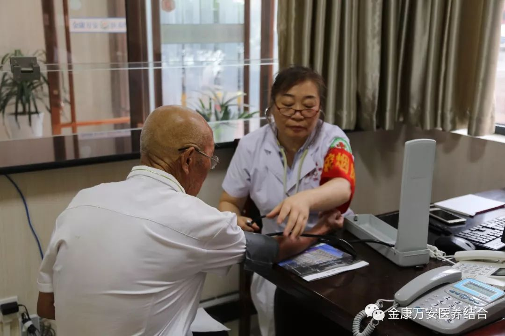
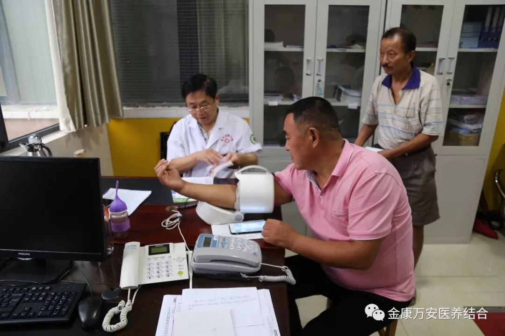
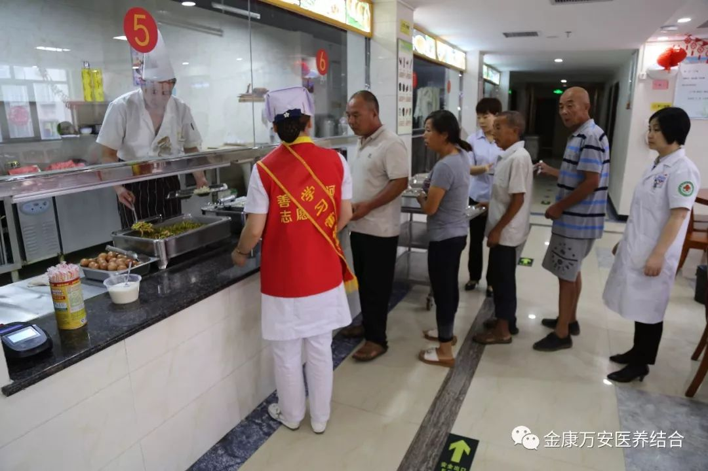
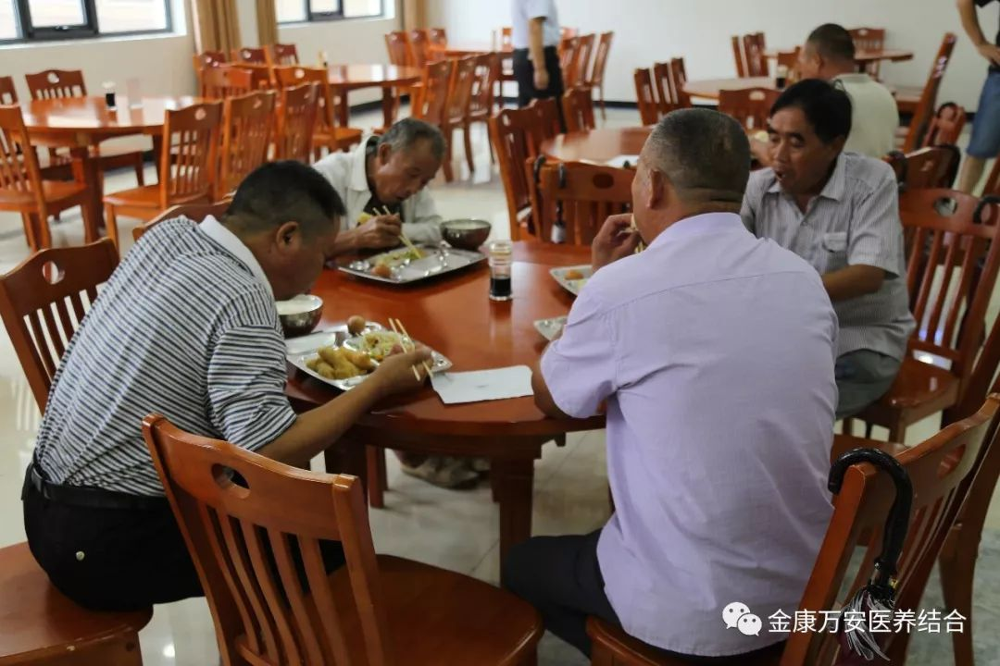
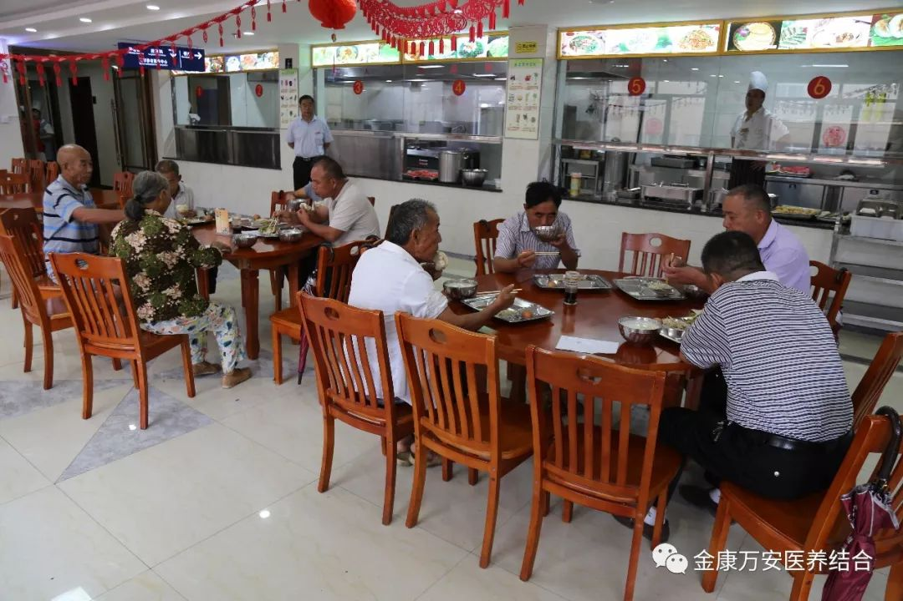

健康扶贫暖人心 免费体检惠民生
漯河金康护理院
漯河万安康复医院
开展“天使减贫行动”
助力医疗脱贫攻坚
对口支援老窝镇古同村
贫困村民进行免费体检
为深入贯彻省、市脱贫攻坚推进会议精神，形成强大脱贫攻坚合力，打赢脱贫攻坚战， 进一步提升医疗服务行动，落实区委关于健康扶贫工作的指示精神，积极做好健康扶贫工作，更好地解决贫困村民看病难、看病贵、看病远等实际问题，帮助所需人员尽快脱离因病致贫、因病返贫的困境，漯河金康护理院、漯河万安康复医院于8月4日开展为对口帮扶老窝镇古同村的18位贫困村民及五保老人进行免费体检活动。
召陵区老窝镇古同村是漯河金康护理院、漯河万安康复医院医疗帮扶对口支援村，早在七月份的时候，金康万安两院就派医疗专家走进古同村进行“天使减贫”助力医疗脱贫攻坚大型义诊活动，受到了当地村民的热烈欢迎与高度赞扬，由于义诊当天人员较多，有部分村民没有享受到医疗帮扶，回来之后，王卫峰院长时刻惦记着古同村的村民，积极地与当地村干部联系，把未体检的贫困村民及五保老人接到漯河万安康复医院进行免费体检。

考虑到大多数都是腿脚不方便的老人，我院精心筹备，专门安排3部车辆免费为18名扶贫对象进行接送，并全程陪护。

天空下着大雨，王卫峰院长早早的就带领相关工作人员做好准备工作，在门诊大厅迎接体检人员的到来。

  
因考虑大家体检需抽血，不能吃早饭，王卫峰院长提前部署，安排膳食科人员一早为18名扶贫人员准备了豆浆、油条、鸡蛋等丰富的早餐。
  一位73岁的老大爷激动地说：“万安康复医院专车免费接送，还为我们准备吃的，真是比儿女还上心”。
王院长说，此次为召陵区古同村贫困村民及五保户进行医疗帮扶免费体检活动，是我院进行精准扶贫、健康扶贫的一个开始，今后我们将会继续对帮扶村开展送医下乡活动，用实际行动落实精准扶贫、健康扶贫服务，为百姓健康保驾护航，切实为百姓解决因病致贫、因病返贫做出我们应有的贡献。